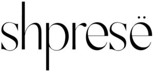

Trade Mark Journal No.2025/024 13 June 2025
WO0000001856583 (14)
Office of origin: Sweden
Date of International Registration:11 April 2025
Date of designation in the UK:
11 April 2025

- Class 14
- Diamonds; silver; precious jewellery; sterling silver jewellery; bracelets; bracelets of precious metal; bracelets [jewellery]; brooches [jewellery]; brooches [jewellery]; women's jewelry; decorative articles [trinkets or jewellery] for personal use; diamond jewelry; rings [jewellery]; engagement rings; gold necklaces; ankle bracelets; gold plated bracelets; gold plated brooches [jewellery]; gold-plated necklaces; gold plated chains; gold plated earrings; gold jewellery; gold plated rings; necklaces [jewellery]; necklaces of precious metal; necklaces [jewellery]; necklaces [jewellery]; necklaces [jewellery]; necklaces [jewellery]; pendants; drop earrings; jewel pendants; jade [jewellery]; clips of silver [jewellery]; body jewellery; earrings; gold earrings; pierced earrings; earrings; pearls [jewellery]; pearls [jewellery]; bead bracelets; personal jewellery; plastic bracelets in the nature of jewelry; platinum rings; platinum jewelry; dress ornaments in the nature of jewellery; ornamental pins; pins [jewellery]; rings [jewellery]; gold rings; rings [jewellery] made of precious metal; rings [jewellery] made of non-precious metal; rings [jewellery]; rings coated with precious metals; silver bracelets; silver necklaces; silver earrings; silver-plated bracelets; silver-plated necklaces; silver-plated earrings; silver rings; jewellery made from silver; paste jewellery; trinkets coated with precious metal; articles of jewellery coated with precious metals; jewellery made of plastics; jewellery fashioned of cultured pearls; jewellery fashioned from non-precious metals; jewellery made of crystal coated with precious metals; jewellery made of semi-precious materials; gold jewellery; jewellery made of glass; jewellery of yellow amber; jewelry for the head; jewellery made from silver; jewellery in the form of beads; articles of jewellery made from rope chain; jewellery made of crystal; jewellery containing gold; pearls [jewellery]; gold jewellery; jewellery made of semi-precious materials; jewellery fashioned from non-precious metals; jewellery made of bronze; jewellery made of precious metals; bib necklaces; pewter jewellery.
Shpresë AB